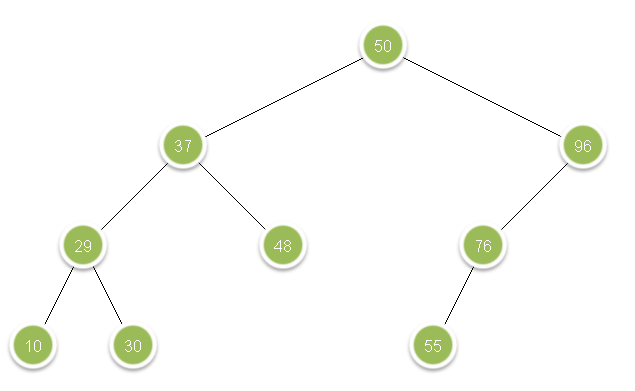

05 이진 탐색 트리
1. 이진 탐색 트리란?
이진 탐색 트리 또한 트리 구조를 기반으로 하고 있는 데이터 구조 알고리즘입니다. 모든 노드에는 그에 해당되는 값이 있으며, 각각의 노드의 왼쪽 서브트리에는 자신의 값보다 작은 값을 가진 노드가 존재하고, 오른쪽 서브트리에는 자신의 값보다 큰 값을 가진 노드가 존재합니다. 이러한 구조가 반복되어 좌우 하위 트리는 각각 다시 이진 탐색 트리를 갖게 됩니다. 이진 탐색 트리에는 중복된 노드가 없어야 하므로 그 노드를 찾고자 하는 키 값이 달라야 합니다. 이 프로그램에서는 단순히 노드가 가진 데이터의 값을 키 값으로도 이용하였으므로 적혀 있는 데이터 숫자가 곧 그 데이터의 키 값으로 보셔도 무관합니다.
2. 이진 탐색 트리의 원리
이진 탐색 트리는 이름 그대로 탐색을 주 기능으로 합니다. 사용자가 어떤 값을 찾고자 할 때, 그 값이 존재하면 해당 노드를 리턴하고, 존재하지 않으면 NIL을 리턴합니다. 이러한 값을 찾는 과정은 사용자가 입력한 키 값과 루트 노드에서부터 시작하여 각각의 노드의 키 값과 비교합니다. 만약 입력한 키 값이 노드의 키 값보다 크면 우측 노드로 이동하고, 작으면 좌측 노드로 이동합니다. 이러한 과정을 거쳐 사용자가 입력한 데이터를 탐색하는 알고리즘입니다.
이진 탐색 트리에서는 데이터 삽입 기능도 담당합니다. 삽입하고자 하는 데이터를 입력했을 때, 탐색 알고리즘과 동일한 형태로 진행하다가 트리의 끝까지 도달했다면 그 위치에 있는 노드의 키 값과 비교하여 입력한 키 값이 크면 우측에, 작으면 좌측에 새로운 노드를 추가시킵니다.
3. 용어 설명
용어는 힙과 거의 유사하므로, 자세한 내용은 힙을 참고하십시오.
4. 예제

(1) 위와 같은 이진 탐색트리에서 '87'과 '35'를 추가하기 위해 각각 몇 번의 비교 과정을 거치겠는가?
(2) (1)의 과정을 거친 후 나타나는 이진탐색트리의 모습을 그림으로 나타내시오.